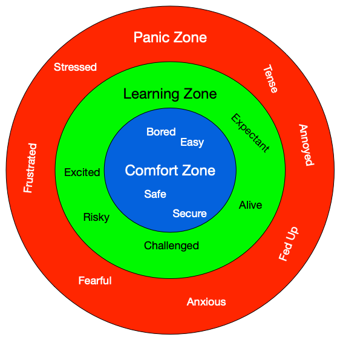

1.1. Foreword to PIE Edition¶
The Programming, Interactivity and Ethics (PIE) Edition of the FOPP textbook builds on the fantastic content in the FOPP text, but adds in two very strong threads focused on interactive, event-based programming, and on ethical issues in programming. The PIE additions and edits were created by Dr. Celine Latulipe at the University of Manitoba. The PIE version incldues the following changes and additions from the original FOPP textbook:
Chapters are reordered - conditionals are earlier, lists are later, functions are split into two chapters.
Content is combined into chapters in some cases so that there is one textbook chapter per week
Some content is removed for a shorter Canadian semester (13 weeks instead of 15 weeks), and to make room for interactivity and ethics threads
Much more extensive use of Turtles module to focus on interactivity, including using mouse and keyboard callbacks
Use of CodeSkulptr/SimpleGUI for more interactive, event-based programming
Split functions into two separate chapters (first chapter on functions is about modularity, second chapter on functions covers parameters and return values). This follows the spiral model of content presentation.
Strong focus on differentiation between the programmer and the end user, to highlight that the programmer is NOT usually the end user, and there are ethical values at play when designing software systems for people.
Sections added to most chapters to highlight the ethical impacts of writing code using various programming concepts.
1.1.1. Original Foreword¶
By David Beazley
As an educator, researcher, and book author, I am delighted to see the completion of this book. Python is a fun and extremely easy-to-use programming language that has steadily gained in popularity over the last few years. Developed over ten years ago by Guido van Rossum, Python’s simple syntax and overall feel is largely derived from ABC, a teaching language that was developed in the 1980’s. However, Python was also created to solve real problems and it borrows a wide variety of features from programming languages such as C++, Java, Modula-3, and Scheme. Because of this, one of Python’s most remarkable features is its broad appeal to professional software developers, scientists, researchers, artists, and educators.
Despite Python’s appeal to many different communities, you may still wonder why Python? or why teach programming with Python? Answering these questions is no simple task—especially when popular opinion is on the side of more masochistic alternatives such as C++ and Java. However, I think the most direct answer is that programming in Python is simply a lot of fun and more productive.
When I teach computer science courses, I want to cover important concepts in addition to making the material interesting and engaging to students. Unfortunately, there is a tendency for introductory programming courses to focus far too much attention on mathematical abstraction and for students to become frustrated with annoying problems related to low-level details of syntax, compilation, and the enforcement of seemingly arcane rules. Although such abstraction and formalism is important to professional software engineers and students who plan to continue their study of computer science, taking such an approach in an introductory course mostly succeeds in making computer science boring. When I teach a course, I don’t want to have a room of uninspired students. I would much rather see them trying to solve interesting problems by exploring different ideas, taking unconventional approaches, breaking the rules, and learning from their mistakes. In doing so, I don’t want to waste half of the semester trying to sort out obscure syntax problems, unintelligible compiler error messages, or the several hundred ways that a program might generate a general protection fault.
One of the reasons why I like Python is that it provides a really nice balance between the practical and the conceptual. Since Python is interpreted, beginners can pick up the language and start doing neat things almost immediately without getting lost in the problems of compilation and linking. Furthermore, Python comes with a large library of modules that can be used to do all sorts of tasks ranging from web-programming to graphics. Having such a practical focus is a great way to engage students and it allows them to complete significant projects. However, Python can also serve as an excellent foundation for introducing important computer science concepts. Since Python fully supports procedures and classes, students can be gradually introduced to topics such as procedural abstraction, data structures, and object-oriented programming — all of which are applicable to later courses on Java or C++. Python even borrows a number of features from functional programming languages and can be used to introduce concepts that would be covered in more detail in courses on Scheme and Lisp.
In reading Jeffrey’s preface, I am struck by his comments that Python allowed him to see a higher level of success and a lower level of frustration and that he was able to move faster with better results. Although these comments refer to his introductory course, I sometimes use Python for these exact same reasons in advanced graduate level computer science courses at the University of Chicago. In these courses, I am constantly faced with the daunting task of covering a lot of difficult course material in a blistering nine week quarter. Although it is certainly possible for me to inflict a lot of pain and suffering by using a language like C++, I have often found this approach to be counterproductive—especially when the course is about a topic unrelated to just programming. I find that using Python allows me to better focus on the actual topic at hand while allowing students to complete substantial class projects.
Although Python is still a young and evolving language, I believe that it has a bright future in education. This book is an important step in that direction. David Beazley University of Chicago Author of the Python Essential Reference
1.1.2. Preface¶
Today, it is hard to imagine life without computers. We carry them in our pockets, read with them on the couch, and use them on our desk at work. Computing is the Swiss Army knife of the 21st century: a convenient tool that can be used to solve a wide array of problems. The original computers were large and limited in function: nothing more than very basic calculators. The military was the first to find some of the many applications of this technology: made small, computers could be used to improve the precision of bombing; made large and (relatively) powerful, they could be used to break military codes. As computers continued to grow in power and drop in price, many more peaceful applications were found:
Scientists in both natural and social sciences can use them to analyze vast quantities of data. For example, astronomers are able to identify distant stars in large images of the sky and sociologists are able to analyze the behavior of all the citizens of a country.
Artists and students of literature can use them to analyze great works, to find patterns in them that the human eye or ear had missed and use them to algorithmically generate some new works (examples from literature[1, 2] and music).
Business people can use them to instantaneously keep track of the health of their business across the globe and analyze past behaviors to better prepare for the future.
Doctors and medical researchers can use them to track the effect of new medicines across vast populations of patients.
Software engineers can use them to create apps and websites that attract billions of users.
Today, the amount of computing power and the volume of data available to us is staggering. The field of machine learning is just beginning to harness this power and data and is transforming the field of computer science. At one level, machine learning, allows programs to do for themselves what programmers have had to do for years, which is to recognize complex patterns in the data. Machine learning algorithms are now routinely doing better than humans in tasks like reading X-rays, or recommending a restaurant to try.
This course is about exploring the use of computer programs to solve these kinds of problems, whatever your area of interest and major might be.
To do so, this book will teach you how to understand and create computer programs in Python. Python is a programming language that is in wide use both for professional software development and in education. In the professional world, it is used for anything from creating small scripts that rename files in a folder, to developing full web applications such as YouTube, SnapChat and DropBox. In the world of education, Python is a popular language because of its relatively simple syntax, its robust set of built-in functionality and its beginner-friendly error messages. For all these reasons and more, Python has become widespread in the world of data science and machine learning as well; in fact, it is the principal language of TensorFlow, Google’s open-source machine learning library.
At the beginning of each chapter, we will outline for you the learning goals and objectives that should be accomplished once you have gone through the chapter. And, throughout the textbook, you will find projects that connect what you have learned to solving real world problems.
Understanding computer programs requires orderly, logical, mechanistic thinking. Programs are just sequences of actions to perform; when executed, they transform input data into output data:
numbers turn into other numbers (e.g. basic math operations like sin or log)
images turn into words or numbers (e.g. a cell phone photo of a diseased-looking leaf of a plant becomes the name of the disease affecting the plant or the number of whiteflies infesting it)
images turn into other images (e.g. filters in Instagram)
words turn into tables (e.g. reporting the number of times each character speaks in Shakespeare’s works)
numbers turn into 3D models of great works of art (e.g. Stanford’s Michelangelo project)
1.1.3. Get in the Learning Zone¶
Programs execute very reliably, and very quickly, but not creatively. Computers do what you tell them to do, not what you mean for them to do. Thus, understanding computer code involves a lot of mental simulation of what will actually happen, not what you wish would happen. This can be frustrating at times but it’s something that you will get better at with practice. As you go through the activities in this class, some will be easy for you to complete, i.e. in your comfort zone. Being in your comfort zone is nice but it probably means you are not learning very much. More challenging activities will encourage you to think through the problems and to refer back to the reading to allow you to enter your learning zone. This is the zone that you strive to be in for as much of the course as possible. Beyond your learning zone lies the panic zone where the problem overwhelms your ability to grow and learn. If you find yourself in the panic zone, please seek help from your instructor and/or classmates: none of the activities in this book are intended to stump you. As you understand how to solve some simpler problems, you will develop the ability to join these solutions together to solve increasingly challenging problems with real-world applications.
{kind=link}
In addition to mechanistic thinking, writing computer programs requires creative problem solving or the ability to identify a complex situation, think creatively about possible solutions, and express those solutions clearly and accurately. As it turns out, the process of learning to program is an excellent opportunity to practice problem solving skills you can use in other parts of your life. We sincerely believe that the combination of knowledge of Python, creative problem solving skills and expressing those solutions in such a way that a computer can effectively carry them out (computational thinking) will make you more productive and efficient in tackling your work in future classes,whether in Computer Science, Business, Psychology or History. And it may even pique your interest in becoming a Data Scientist or a Computer Scientist.